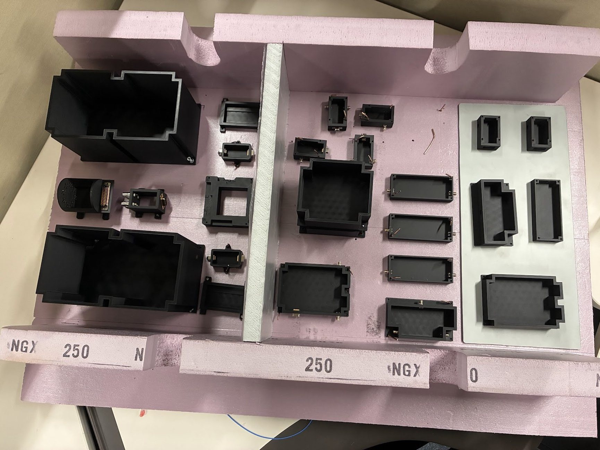
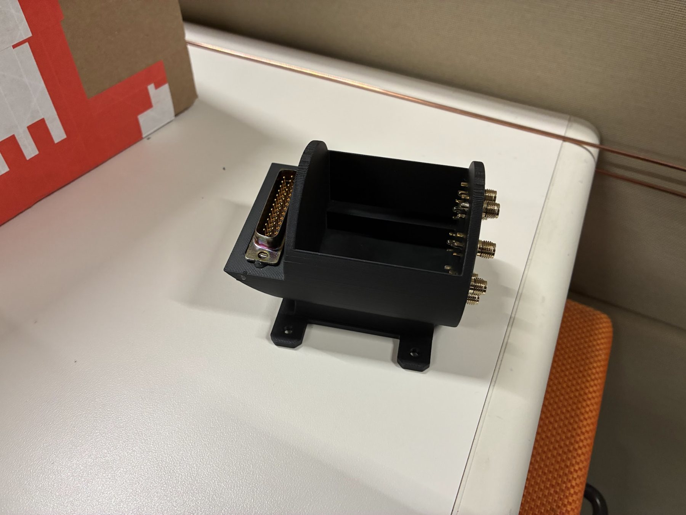
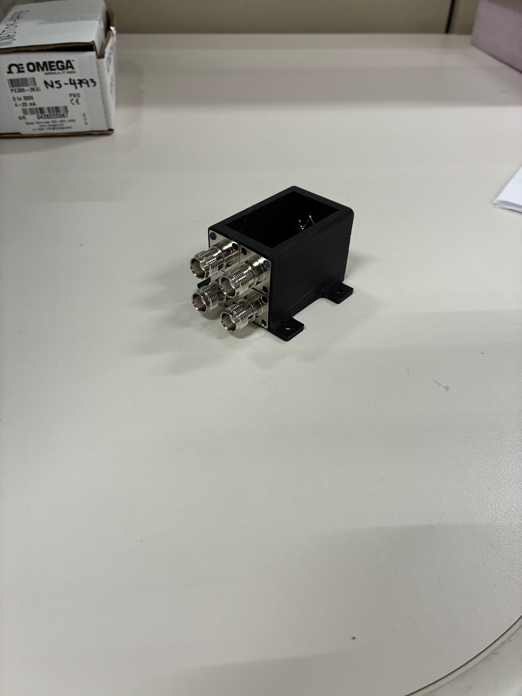

Intuitive Machines, Jun–Aug 2026
IM-4 communications box mockup
53 connectors, 13 boxes, built to full scale
A physical mockup of the IM-4 comms box, with every external connector, so the integration team could test box placement and harness routing before flight hardware existed.
- Sourced all 53 connectors from manufacturer drawings, matching shell size, keying, and backshell geometry so mated harnesses sit at true depth and clocking.
- Redesigned 13 component boxes to their flight envelopes, each carrying its connectors at the correct location and orientation.
- 3D printed the boxes and connector interfaces, then built the full-scale foam structure with a fellow intern.
- The team used it to route harnesses in place and catch clearance and bend-radius problems while changes were still cheap.
Creo, Technical drawings, Design for assembly, 3D printing


